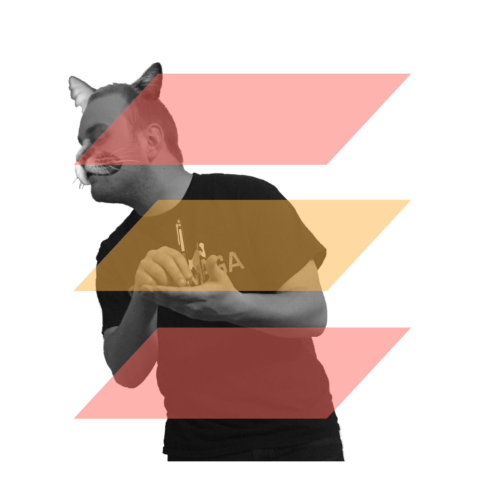

The Lazy Cat & His Study Group
A Lazy Cat happened to walk past the study room of his university’s dorm. There he saw the fellow members of his Study Group dutifully preparing for the upcoming midterm.
The Cat considered himself smart, but he lacked the motivation to apply himself to his studies. He believed that in order to do well in his classes, he must only complete his homework and trust his intuition to pass the exams.

He asked his Study Group, “Excuse me, would you mind terribly if I checked my homework answers with yours?” Of course, his only intention was to copy them.
“Go ahead,” they replied. “You are welcome to stay and study with us as well.”
“Please!” scoffed the Cat. “That is a waste of my time.”
Once the Cat had all the answers he needed, he started to leave, but the Study Group had realized his intentions. “Do not bother coming back!” they called. “This group is meant to help each other learn, and you have contributed nothing.”
The day of the midterm came and went, and the Cat was shocked to see he scored the lowest in the class. The defeated Cat returned to his former companions for help, but they had not forgotten his superior airs toward them. They held true to their words and never allowed the Cat to work with them again.